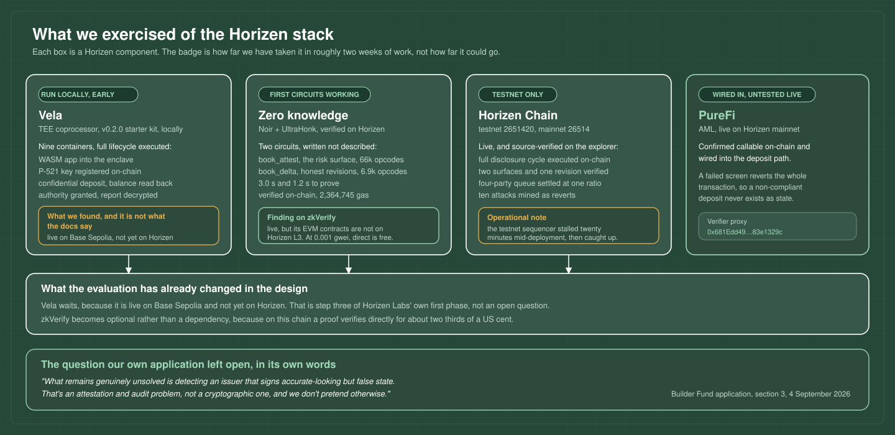
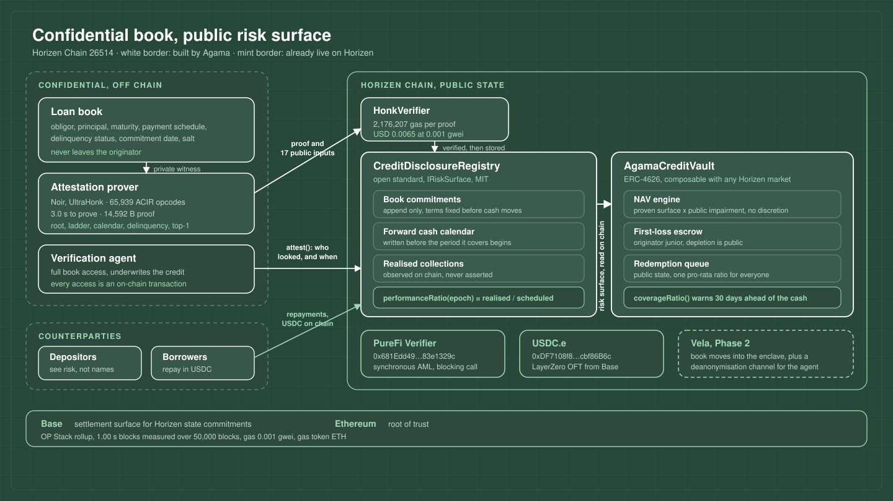

Technical Architecture
Confidential Credit on Horizen
Where the evidence for this document lives
Every claim below is checkable without taking our word for it. The repository accompanying this application is laid out so that each section here has a folder behind it.
| Folder | Contents | Sections it backs |
|---|---|---|
zk/ | book_attest and book_delta Noir circuits, the scenario generator, and the proving script that also runs the backdating attack on every build | 4, 4.4, 5.1 |
tee/ | The full Vela stack we ran locally, the confidential lifecycle we executed on it, and the five findings that took it off our critical path | 2.2, 9 |
contracts/ | Registry, vault, IRiskSurface, both generated verifiers, and forty-seven tests: fork, adversarial, stateful invariant and zkVerify | 5, 6, 8.2 |
deployment/ | The live Horizen testnet deployment: scripts, addresses, every transaction hash, and a reader that dumps the public surface using only eth_call | 8.1 |
The contracts are source-verified on the Horizen explorer, so the code running at the addresses in Section 8.1 can be read directly rather than trusted.
Horizen's review of our first submission made one observation that this entire architecture exists to answer:
That is correct, and no amount of additional cryptography changes it. A trusted execution environment attests that code ran on some data. A zero-knowledge proof attests that numbers follow from some commitment. Neither one reaches the world. A design that answers this objection by adding more cryptography is answering a different objection.
The design below therefore does not try to prove that loans are good. It makes the claim that they are good falsifiable in public, on a fixed clock, without naming a single borrower. A clean signature over a bad book still produces a valid proof. It then fails the cash calendar it published a month earlier, mechanically, with nobody's cooperation required.
Confidentiality covers identity. It does not cover risk.
Hiding a borrower's name is a legitimate commercial requirement and we defend it. Hiding the shape of an exposure is not a privacy feature: it is an information advantage held over the person who takes the loss. Our first submission published NAV and vault size, which let a depositor check arithmetic and nothing else. Every risk-bearing property of the book is now public, in aggregate, proven against a commitment, and machine readable.
Every claim this system makes falls into exactly one of three categories, and the document is explicit about which:
| Category | Mechanism | Examples |
|---|---|---|
| Proven | Zero-knowledge proof against an on-chain Merkle commitment, verified on Horizen | Outstanding principal, maturity ladder, delinquency buckets, concentration, forward cash calendar |
| Observed | On-chain state, no assertion by any party | Cash collected, cash disbursed, redemption queue depth, first-loss remaining, who requested book access and when |
| Trusted | Residual, bounded, and named in Section 7 | That the committed leaves describe real loans; that the verification agent is honest |
The third row is the honest one. It is small, it is named, and it is bounded by economics rather than by a promise: a book may never claim more principal than the chain watched leave the vault, so inventing exposure costs real, publicly visible cash.
| Term | Definition |
|---|---|
| Risk surface | The set of aggregate credit properties published for a book: count, principal, maturity ladder, forward cash calendar, delinquency buckets, largest single-obligor exposure. |
| Book root | Merkle root over the loan leaves. Committed on-chain before the positions it covers are funded. |
| Forward cash calendar | Contractual cash due over the 30 days following a valuation date, published before that period begins. |
| Performance ratio | Realised collections divided by the calendar published in advance for the same period. |
| Impairment schedule | A fixed public write-down per delinquency bucket, applied mechanically. The originator has no discretion over its own mark. |
| First loss | Originator capital escrowed in the vault, junior to every depositor, consumed before any depositor loss. |
| Verification agent | An independent party with full book access. Its access requests are on-chain transactions. |
| Vela | Horizen's TEE-based confidential coprocessor. Closed beta, see Section 2.2. |
Everything in this section was measured against live endpoints on 15 September 2026, not taken from documentation. The measurements are reproducible from the repository accompanying this document.
| Property | Measured value |
|---|---|
| Chain ID | 26514, eth_chainId returns 0x6792 |
| Stack | OP Stack rollup on Caldera, settles to Base, Base settles to Ethereum |
| Block time | 1.00 s, averaged over 50,000 blocks |
| Gas price | 1,000,764 wei, about 0.001 gwei. Gas token is ETH |
| Block gas limit | 30,000,000 |
| Chain activity | 307 transactions across the last 300 blocks |
| USDC.e total supply | 3,166.65 USDC |
| PureFi Verifier | 0x681Edd4906e2a0a277E2A6c394A4595f83e1329c, 2,008 bytes of code, callable |
| Stork Oracle | 0xacC0a0cF13571d30B4b8637996F5D6D774d4fd62, deployed |
Two of these rows shape the design.
The stablecoin supply. Horizen mainnet has roughly three thousand dollars of USDC.e on it. There is nothing to lend and nothing to lend against. A credit product here is not competing for existing liquidity, it is the reason liquidity would arrive. That is the strategic case for funding a money market primitive rather than an application.
The gas price. At 0.001 gwei, verifying a zero-knowledge proof directly on Horizen costs about two thirds of a US cent (Section 4.3). Daily attestation of a full credit book costs under 2.40 USD a year. This removes the usual reason to attest monthly, and it changes what the product can promise: disclosure becomes a continuous signal rather than a periodic report.
We ran Vela rather than reading about it. The full v0.2.0 stack from
HorizenOfficial/vela-starterkit
was brought up locally, nine containers, and a complete confidential lifecycle executed using
the reference application and wallet from
vela-nova v0.2.0.
The contracts we read to establish what leaks are in
HorizenOfficial/vela. Every command, and
the five findings it produced, are in tee/README.md:
7335106231336828932.ASSOCIATEKEY request.DefaultAuthority.addAllowedAuthority, emitting a public event.The last step is the one that matters to this architecture: a designated authority, and
only a designated authority, can pull private state, and the act of pulling it is an
on-chain transaction that everyone can see. Requests from an unauthorised address
revert with AuthorityNotAllowed, which we confirmed.
Where Vela actually is, because two Horizen pages disagree
docs.horizen.io/vela/limitations
states that Vela “is not yet deployed
to any testnet or mainnet environment” and that the development environment “uses
an emulated Trusted Execution Environment rather than hardware enclaves”. The local
stack matches that description: TEE_NO_ATTESTATION=true, and all three enclave
keys sit in plaintext in the shipped .env.dev.
The product's own page says something different, and more favourable. Vela launched publicly on 16 March 2026 and is “live on Base Sepolia for early-access developers”, with a first roadmap phase listed in this order:
| Step | Horizen Labs' own wording | Where Horizen is |
|---|---|---|
| 1 | “Live on Base Sepolia for early-access developers” | shipped by them |
| 2 | “Promote to Base mainnet” | ahead of them |
| 3 | “Deploy to Horizen testnet and mainnet” | ahead of them, and what we wait on |
Alongside it: “Vela is open to developers now. Tell us what you're building and we'll get you into an environment.”
We could not confirm the Base Sepolia deployment on-chain, because no addresses are published for it, and the disagreement between the two pages is worth putting to them directly. What follows from it for this design is narrow: Vela stays off the Phase 1 critical path, because a dependency that is live on a different chain than ours is still one we cannot ship against today. It does not reduce what Phase 2 is worth, and it makes Phase 2 a bet on a roadmap item Horizen has already committed to in public.
What Vela makes public, by design
This is a design input rather than a criticism, and it happens to suit a credit vault. The
ProcessorEndpoint interface and the local chain agree:
| Public on-chain | Private inside the enclave |
|---|---|
| Sender address of every request | Request payload |
assetAmount on every deposit, a plain calldata field | Internal ledger state |
| Withdrawal recipient, token and amount | Per-user balances |
| Request timing, success or failure | UserEvent contents, P-521 encrypted |
| State root after every transition | — |
| Every authority grant, revocation and report request | — |
Vela's perimeter is public and its interior is private. Money entering and leaving is fully visible with amounts and addresses; only the internal bookkeeping is hidden. For confidential credit this is the correct shape: we want the cash rail public and the borrower list private. Phase 2 builds on it rather than against it.
Other constraints recorded
reflect, no net, no math/big, and strict determinism: no time.Now(), no randomness.no Secp521r1_PubKey found until the receiver registered. Every borrower and LP must be onboarded with a key.AuthorityRegistry.setAppAuthorityContract lets an application supply its own authority checker, so the rule for who may look can itself be a smart contract. Phase 2 uses this.zkVerify is live as its own L1 and its EVM verification contracts are deployed on Base, Sepolia, Base Sepolia, Arbitrum Sepolia, Optimism Sepolia and EDU Chain Testnet. Not on Horizen L3. Consuming a zkVerify aggregation from a Horizen contract would require a relayer that Horizen does not currently run.
We built the integration rather than reasoning about it, because the trade-off is not
obvious until it is measured. zk/zkverify holds the submission path and
contracts/src/ZkVerifyRiskSurface.sol the consumer.
| What we established | Result |
|---|---|
| zkVerify verifies our proof | Done. Submission 0x49ed9bbc on Volta, statement 0x0f3c234e, aggregation published at block 0x761aa9e3 with root 0xb2ee6f0e |
| A contract on another chain can recompute that statement and admit the surface | Done on Base Sepolia. The consumer derives 0x0f3c234e on-chain from the public inputs alone and admits the surface for 266,041 gas |
| A domain can be configured to relay its root to an EVM chain | No. On Volta and mainnet alike hp_dispatch::Destination has one variant, None |
| An aggregation contract exists on Horizen L3 | No. This is what keeps the route off the critical path |
| Cost of admitting the same risk surface | Gas |
|---|---|
| Verifying the proof directly on Horizen | 2,364,745 |
| Admitting it from a zkVerify aggregation, on Base Sepolia | 266,041 |
| of which the leaf computation | 3,286 |
Both routes write the same thirteen words of risk surface, so the comparison that matters is the verification component alone: a pairing check over a 218 circuit against a Merkle path, roughly 2.1 M gas against a few thousand. An order of magnitude is real, and on Horizen at 0.001 gwei it is also the difference between two thirds of a cent and a tenth of one. That is why Phase 1 verifies directly and treats aggregation as the option it is. On a chain with L1 gas prices the arithmetic reverses, and the same consumer contract works there.
NotAggregated when pointed at their real contract.
Everything downstream of that hop is genuine, and it is all in
deployment/base-sepolia.md.
| Component | What we found | Where we are |
|---|---|---|
| Horizen mainnet, EVM, ERC-4626 | Live, 1 s blocks, effectively free gas | in use |
| USDC.e | Live, 3,166 USDC outstanding | in use |
| PureFi AML and KYC | Live, verified callable | in use |
| On-chain ZK verification | 2,178,509 gas on a mainnet fork, 2,364,745 live on testnet | in use |
| Stork oracle | Live | not needed yet |
| zkVerify | Verifies our proofs, relays to no chain by domain setting, absent from Horizen L3 | an option, not a dependency |
| Vela TEE | Live on Base Sepolia for early-access developers, not yet on Horizen | waiting on step 3 |
Our Builder Fund application, submitted on 4 September 2026, named one problem as genuinely unsolved. Section 3 of that application said it in these words:
The review that came back put the same problem more sharply, and this document is the work we did about it. Before designing anything we went through Horizen's own stack component by component, ran what could be run, and let the findings decide the design rather than the other way round.

| Component | How far we have taken it so far | Where to check it |
|---|---|---|
| Vela | Full v0.2.0 stack run locally, complete confidential lifecycle executed | tee/README.md, every command and the five findings |
| Zero knowledge | Two circuits written, proven, and verified on-chain by Horizen | zk/book_attest, zk/book_delta, rebuild with zk/prove.sh |
| Horizen Chain | Deployed on testnet 2651420, source-verified on the explorer | deployment/, every transaction hash. Read the live state with deployment/read-state.sh |
| PureFi | Confirmed callable on mainnet and wired into the deposit path | 0x681Edd4906e2a0a277E2A6c394A4595f83e1329c |
| zkVerify | Evaluated and set aside, with a reason | Section 2.3 |
Two of those findings changed the architecture rather than confirming it. Vela left the critical path, because a hardware guarantee that is not deployed anywhere cannot carry a mainnet product. zkVerify became optional rather than a dependency, because on this chain a proof verifies directly for about two thirds of a US cent. Neither conclusion is one we expected going in.

Off-chain, confidential
On Horizen mainnet, public
Ordering is the substance of this design, not an implementation detail. Each step is constrained to happen before the one that follows, and the contracts enforce it:
| # | Step | Why it must happen here |
|---|---|---|
| 1 | commitBook(root) | Terms and payment schedules are fixed on-chain before anyone knows the outcome. The commitment is what a later proof is measured against. |
| 2 | deploy(to, amount, root) | Cash moves only against an already-committed book. The transfer is public, and it raises the ceiling on how much principal any future surface may claim. |
| 3 | publishSurface(proof, inputs) | The proven aggregates are stored, and the forward cash calendar is written to the epoch it covers. Writing it later than the period would be worthless, so the contract writes it first. |
| 4 | recordCollection(amount) | Borrower repayments arrive as on-chain stablecoin transfers. Realised cash is observed, never reported. |
| 5 | performanceRatio(epoch) | Realised against scheduled. This is the number a signed-but-bad book cannot survive. |
| 6 | attest(root, asOf, findings) | The verification agent records that it looked and what it concluded. The depositor reads this, and reads its absence. |
Each position is a leaf in a Merkle tree over 64 slots per attestation batch. The leaf hash commits to every field, so no field can change without changing the root:
pub struct Loan {
obligor: Field, // salted obligor id, stable across attestations
principal: u64, // outstanding principal, 6dp stablecoin units
maturity_ts: u64, // final maturity
due_ts: u64, // next scheduled payment date
due_amount: u64, // amount contractually due at due_ts
status: u8, // 0 current | 1 1-30dpd | 2 31-60 | 3 61-90 | 4 90+
committed_ts: u64, // when this leaf was first committed on-chain
salt: Field, // blinding factor
}The obligor field is a salted identifier rather than a name. It is stable
across attestations, which is what lets the circuit aggregate exposure per borrower and prove
a concentration figure without revealing who anyone is. The salt prevents a
dictionary attack on a leaf whose other fields an observer might guess.
Each attestation publishes the following, all proven against the committed root:
| Field | Meaning | Reference book |
|---|---|---|
positions | Active position count | 22 |
totalPrincipal | Outstanding principal | 4,760,000 USDC |
ladder[5] | Principal maturing within 30, 90, 180, 365 days and beyond | 190k / 660k / 995k / 1,530k / 1,385k |
dueNext30d | Contractual cash due over the next 30 days | 33,487.50 USDC |
delinquent[5] | Principal by delinquency bucket | 4,215k current, 435k 1-30dpd, 110k 90+ |
top1 | Largest single-obligor exposure | 1,050,000 USDC, 22.05% |
maxCommittedTs | Newest per-leaf commitment timestamp | anti-backdating watermark |
A depositor reading that row knows they are buying a 22-position book with a 22 percent top-name concentration, 2.31 percent already ninety days past due, and 190,000 USDC maturing inside the month. They know the risk shape they are taking. They still cannot name one borrower, and they never will.
Source in zk/book_attest, written in
Noir and proven with
Barretenberg's UltraHonk backend.
zk/prove.sh rebuilds every proof quoted in this document from scratch, and fails
the build if the backdating attack in Section 4.4 ever produces a valid
proof. The generated verifier is deployed and source-verified on Horizen at
0xb95B3603…,
so a proof in this document can be checked against the contract that accepted it.
Given a private array of 64 loan leaves and a public valuation date, the circuit proves all of the following simultaneously:
due_amount over every position whose next payment falls in the 30 days after the valuation date.The last constraint is the circuit's contribution to the honesty problem. Without it, a defaulted position could be inserted after the fact and backdated into a clean history.
This is stated in the circuit's own source comment rather than only in documentation, because the distinction is the product.
| Metric | Value |
|---|---|
| Toolchain | Noir 1.0.0-beta.13, UltraHonk, keccak oracle |
| ACIR opcodes | 65,939 |
| Circuit size | 218 |
| Proving time | 3.0 s on a laptop, 14 threads |
| Proof size | 14,592 bytes |
| Public inputs | 17 field elements, 544 bytes |
| Verifier runtime size | 22,063 bytes, 2,513 bytes below the contract limit |
On-chain cost, measured on a fork of Horizen mainnet
| Operation | Gas | ETH | USD at 3,000 |
|---|---|---|---|
commitBook | 98,485 | 0.0000000986 | 0.00030 |
deposit, ERC-4626 | 127,087 | 0.0000001272 | 0.00038 |
publishSurface, full verification | 2,178,509 | 0.0000021802 | 0.0065 |
settle, two queue tickets | 85,100 | 0.0000000852 | 0.00026 |
One caveat worth recording: the verifier sits 2,513 bytes below the 24,576 byte contract size limit. Materially growing the public input set will require splitting the verifier or moving to a proof system with a smaller one.
The attestation circuit proves that a surface honestly describes whatever book was committed. It cannot, on its own, prove that a revision of the book is an honest evolution of the previous one. Without that, an originator could publish a second root containing a loan that had already defaulted, stamped with an old origination date, and every surface over it would still verify.
book_delta closes this. Its central design decision is that a position holds
a permanent slot for the life of the book. Slots are never reused, so a repaid loan sits at
zero principal rather than freeing its slot for a replacement, and matching two books becomes
a linear walk rather than a search.
| Operation | Rule proven |
|---|---|
| Carry a position | Obligor, maturity, origination date and salt are unchanged. Principal may only amortise down, never re-advance. The next payment date may only move forward. |
| Revise an amount due | The amount due at an unchanged payment date may not be lowered, so the bar a position is judged against cannot be moved once set. |
| Change status | Free in both directions. Deterioration has to be expressible; that is the point of a revision. |
| Open a position | Only into a slot that was empty, and only with an origination date at or after the moment the previous root reached the chain. |
| Use an empty slot | Nothing may hide in it: principal, obligor and timestamp must all be zero. |
The fourth row is the one that matters. The registry supplies the previous root's on-chain commitment timestamp as a public input and refuses any proof that disagrees with what the chain recorded, so the circuit is always measured against a date the originator did not choose.
| Metric | Value |
|---|---|
| ACIR opcodes | 6,906, roughly a tenth of the attestation circuit |
| Proving time | 1.2 s |
| Public inputs | 4: old root, previous commitment time, valuation date, new root |
| On-chain verification | 2,222,038 gas, measured on Horizen testnet |
zk/prove.sh builds an
evil scenario in which a defaulted 900,000 USDC position is dropped into a free
slot with an origination date 200 days before the previous commitment. Witness generation
fails with Assertion failed: new position backdated. The build script treats a
successful proof of that scenario as a build failure.
The registry holds three things that a confidential credit product normally keeps in a side letter: the commitment history, the calendar the book promised, and the record of who has been allowed to look at it.
Anti-backdating, at four levels
if (committedAt == 0) revert RootNotCommitted();
if (asOf < committedAt) revert AsOfBeforeCommit();
if (maxCommittedTs > committedAt) revert LeafBackdated();if (claimedPrincipal > deployedCumulative) revert PrincipalExceedsDisbursed();Mechanical impairment
The write-down applied to each delinquency bucket is fixed at deployment and public:
uint16[5] public IMPAIRMENT_BPS = [0, 1000, 3000, 6000, 10000];Carrying value is totalPrincipal - impairedPrincipal(), a pure function of
the proven surface and this constant. Nobody signs a NAV. In the reference scenario,
impairment moves from 153,500 to 246,500 USDC between two attestations on the same positions
with no human marking anything.
Verification access as public state
attest(root, asOf, findingsHash) records who looked, when, at which book, and
what they concluded. verificationAge() returns the seconds since anyone last
did. A depositor cannot read the book. A depositor can read the fact that an independent
party with full access is reviewing it on a fixed cadence, and can read the silence when it
stops.
ERC-4626 over USDC.e, so shares compose with anything on Horizen. Three behaviours differ from a standard vault, all deliberately.
NAV is computed, not asserted
function totalAssets() public view override returns (uint256) {
uint256 principal = registry.surface().totalPrincipal;
uint256 impaired = registry.impairedPrincipal();
uint256 absorbed = impaired < firstLoss ? impaired : firstLoss;
return buffer() + principal - impaired + absorbed;
}Every term is either an on-chain balance or a proven public input. There is no path by which the originator marks its own book.
First loss is on-chain and junior
Originator capital is escrowed in the vault and consumed before any depositor loss.
firstLossRemaining() is public, so its depletion is visible as it happens rather
than at the moment it stops protecting anyone. In the reference scenario it is fully consumed
at 246,500 USDC of impairment, and the share price then falls from 1.0000 to 0.9915 with no
intervention.
Instant redemption is disabled
maxWithdraw and maxRedeem return zero. An instant exit for the
fastest depositor is the mechanism that converts illiquidity into a run. See
Section 6.
Horizen's review asked for “a money market primitive we can diligence on-chain”. We read that literally: a contract should be able to underwrite this vault, not only a human reading a document.
interface IRiskSurface {
function surface() external view returns (Surface memory);
function impairedPrincipal() external view returns (uint256);
function scheduledFor(uint64 epoch) external view returns (uint128);
function realizedFor(uint64 epoch) external view returns (uint128);
function performanceRatio(uint64 epoch) external view returns (uint256);
function concentration() external view returns (uint256);
function attestationAge() external view returns (uint256);
}A Horizen lending market can set an LTV on vault shares programmatically: refuse
collateral whose attestationAge() exceeds a threshold, haircut by
concentration(), liquidate on a performanceRatio() below a floor.
That is on-chain diligence in the literal sense.
The interface and the reference registry are MIT licensed with no dependency on Agama's vault. We are proposing them as the disclosure standard for confidential credit on Horizen. If a second originator adopts the standard and Agama never earns a dollar from them, the grant has still done its work.
PureFi is live on Horizen mainnet and the vault gates deposits on it.
depositWithCompliance calls validatePayload as its first operation,
so a failed AML check reverts the entire transaction and a non-compliant deposit never exists
as state. Our fork test confirms both that the verifier is deployed and that an invalid
payload reverts the deposit.
Horizen's review noted that weekly redemptions leave the depositor last to see a run. The weekly gate is gone, and it was the right thing to remove: a discretionary gate creates the run it is meant to prevent, because being early pays.
| Property | Mechanism | Effect |
|---|---|---|
| The queue is public | RedemptionRequested events plus queueDepth() and per-ticket getters |
No depositor learns about an exodus after the others. The queue is the signal. |
| Settlement is pro-rata | settle() computes one ratio for the whole open queue and is permissionless |
Queueing first buys nothing, so there is no race to queue. |
| Shortfall is announced early | coverageRatio() = (buffer + 30-day inflows + 30-day maturities) / queued |
A depositor sees the gap about a month before it binds. |
| No discretion exists | No role can choose who is paid or reorder the queue | There is nothing for a manager to decide under pressure. |
In the reference scenario two LPs holding 3.3 M and 2.2 M of a 5.5 M vault queue one block
apart. Both receive 13.45 percent of what they asked for. Pushed harder, with forty tickets
spanning two orders of magnitude and each joining a block later than the last, every single
one fills at 17.15 percent. coverageRatio() reads 17.51 percent, and it reads
that before the cash is needed rather than after.
Settlement processes the entire open queue in one transaction, bounded by
MAX_QUEUE = 256. Exceeding that bound is a public condition rather than a
discretionary gate. A full 256-ticket queue settles in 13,434,703 gas, inside Horizen's
30,000,000 block limit, which we measured rather than assumed.
The reserve floor
Nothing above helps if the originator can deploy the entire vault into the book. A
deployment is refused unless it leaves liquid stablecoins worth at least
floorBps of assets under management, 1,000 basis points at deployment.
The base is deliberately assets under management rather than the liquid balance. A floor
measured on the buffer alone can be walked to nothing by repeated partial deployments: take
ninety percent, then ninety percent of what is left, and so on. Measured on a base that does
not move when cash shifts from the buffer into the book, slicing buys the originator nothing.
test_ReserveFloorCannotBeDrained attempts exactly that and fails to get below the
floor.
The floor binds deployments, not redemptions. A queue is entitled to drain the buffer, that is what the buffer is for, and the originator simply cannot deploy again until the book is back above its floor.
This section exists because a confidential credit product that will not name its residual trust assumptions has not earned the confidentiality.
| Assumption | What could go wrong | What bounds it |
|---|---|---|
| Committed leaves describe real loans | An originator commits fictional positions | Claimed principal can never exceed cash the chain watched leave the vault. Fiction costs real money, publicly. |
| Repayments route on-chain | A servicer collects fiat and does not forward it | The forward calendar is missed within one period, in public. Eligibility for the vault requires an on-chain repayment rail. |
| The verification agent is honest | A captured auditor signs clean findings | Attestations are on-chain and dated. A silent agent is as visible as a lying one, and the appointment is a public role a Horizen-appointed party can hold. |
| Book revisions are honest deltas | A new root inserts a backdated bad loan | Proven, not trusted. The revision circuit refuses it, against a commitment timestamp read from the chain rather than supplied by the originator. |
An earlier draft of this document named a gap here: a book revision published a new root, and nothing proved that the new book was the old book plus permitted operations. An originator could in principle have inserted a position with an older commitment timestamp, bounded only by the disbursement ceiling.
That gap is closed by the revision circuit in Section 4.4, which is deployed and verified on-chain rather than scheduled. The backdating attempt it refuses is built on every run of the proving script, and a proof that succeeds is treated as a build failure.
What remains open
The book is 64 slots per attestation batch. A larger originator needs either several registries or a recursive aggregation over batches, which is engineering rather than research, but it is not built. The verifier also sits 2,513 bytes below the contract size limit, so growing the disclosed field set is not free.
Which confidentiality this design delivers, and which it does not
This document covers one of the three confidentiality requirements our Builder Fund application set out, and it is deliberate that it covers the third rather than the first.
| Requirement | Status here | Why |
|---|---|---|
| Credit-level detail: borrowers, maturities, negotiated terms | Working prototype | Commitments plus zero-knowledge proofs, verified on Horizen. Needs nothing that is not already live. |
| Depositor positions and identities | Not started | The vault is ERC-4626, so share balances are public. Hiding them needs a confidential ledger, which is exactly what Vela provides and what we ran locally. It is Phase 2 and it is blocked on Vela shipping. |
| Pending redemptions, confidential until execution | Deliberately inverted for now | The review made the opposite point: a depositor should not be last to learn others are leaving. Both concerns are real and the resolution is in Section 9, not in a choice between them. |
The book behind every figure in this document is synthetic, generated by
zk/gen.py. There is no real originator, no real borrower and no real collection
behind the testnet numbers. What is demonstrated is that the machinery works and refuses what
it says it refuses. Putting a real book behind it is milestone M1.
We also cannot make a depositor able to underwrite this credit, and we will not pretend otherwise. Someone with full access to the book still has to do that work. The claim is narrower: a depositor can verify the risk shape, watch performance as a falsifiable series on a clock the originator committed to in advance, see that an independent party with full access is looking on a fixed cadence, exit through a public queue with no first-mover advantage, and know that the originator loses first.
That is the side letter, moved on-chain, where a contract can read it.
The system described in this document is deployed and running on Horizen testnet, chain 2651420. Not a fork and not a simulation. The full disclosure cycle was executed on-chain: the book committed before any cash moved, two risk surfaces and one revision proof verified by the chain, a short collection recorded, and the redemption queue settled pro-rata.
| Contract | Address |
|---|---|
| CreditDisclosureRegistry | 0x6D7C4a153C47841fE0A75C3b0a5298E1a3c9229B |
| AgamaCreditVault | 0x48db9A42098f8eEc6ff14D771D67cA57f3aB5651 |
| HonkVerifier | 0xb95B360324edbfd324e19196F6fF3B97E9EaA7dA |
| DeltaVerifier | 0xA3C1e81Fdadb5bd098546A4B8FBDfe4169436cF4 |
| Test stablecoin | 0xd0c379C0cD56b62fd9c2fE8913aa261f8096164e |
All five are source-verified on the Horizen explorer. The code running at
those addresses can be read by anyone, and deployment/read-state.sh
dumps the entire public surface using nothing but eth_call. Every
transaction hash behind this section is in
deployment/deployment-testnet.md and
deployment/act2-testnet.md.
Anyone can read the following from the registry today, without asking us for anything:
| Reading | Value |
|---|---|
| Positions, outstanding principal | 22, 4,760,000 USDC |
| Maturity ladder, 30 / 90 / 180 / 365 / beyond | 190k / 660k / 995k / 1,530k / 1,385k |
| Delinquent, current / 1-30 / 31-60 / 61-90 / 90+ | 3,835k / 540k / 275k / 0 / 110k |
| Largest single obligor | 1,050,000 USDC, 22.06 percent |
| Impairment, mechanical | 246,500 USDC |
| Carrying value | 4,513,500 USDC |
| Epoch 0 scheduled | 33,487.50 USDC |
| Epoch 0 realised | 12,000.00 USDC |
| Epoch 0 performance | 35.83 percent |
| First loss remaining | 253,500 of 500,000 USDC |
| Book revisions committed | 2, the second proven to descend from the first |
The three bold rows are the whole argument reduced to three numbers. The book published what it was owed before the period began, the cash that arrived is an on-chain fact, and the ratio between them is a figure nobody had to agree to.
| Operation, on testnet | Gas |
|---|---|
publishSurface, risk surface with ZK verification | 2,364,745 |
commitRevision, revision delta with ZK verification | 2,222,038 |
publishSurface, deteriorated surface | 2,192,403 |
settle, redemption queue | 135,433 |
commitBook | 115,022 |
Independent verification and a real queue
The verification agent has recorded an attestation on-chain, so
attestationCount() reads 1 and verificationAge()
counts up from it. Four depositors then settled in one transaction, sizes
spanning twenty to one, with the founding depositor first in line since a
previous settlement and the other three joining afterwards:
| Party | Queue position | Asked | Received | Fill |
|---|---|---|---|---|
| Founding LP | first, much earlier | 2,010,000.00 | 462,068.97 | 22.989 % |
| LP1 | later | 100,000.00 | 22,988.51 | 22.989 % |
| LP2 | later | 200,000.00 | 45,977.01 | 22.989 % |
| LP3 | later | 300,000.00 | 68,965.52 | 22.989 % |
Identical to three decimal places. The residual difference is integer rounding on a six-decimal asset, not an ordering advantage. This is the claim in Section 6, executed on a public chain rather than asserted in a test.
Attacks refused on-chain, with hashes
Ten attacks were submitted to the chain as real transactions and mined as
reverts. Each revert selector was recovered by replaying the call at the block
before it was mined. Tampered public inputs are rejected inside the verifier;
stale surfaces by monotonicity; replayed and mis-parented revisions by the
descent check; a false previous-commitment date by the value the chain itself
recorded; principal without disbursement by the ceiling; and the queue is not
bypassable through redeem.
Forty-seven tests, in contracts/test/. Seven run the disclosure cycle against a
live fork of Horizen mainnet, chain 26514. Twenty-three attack the design rather than demonstrate it. Six are stateful invariants
driven by randomised traffic, and six cover the zkVerify route, one of them against
the live aggregation contract on a fork of Base Sepolia.
| Test | What it establishes |
|---|---|
FullDisclosureCycle | Commit, fund, disburse, prove, mark. NAV derived from the proof, not asserted. |
BadBookFailsItsOwnCalendar | The reviewer's case. The proof passes, the calendar is missed at 35.83 percent, first loss is consumed, the share price falls to 0.9915 mechanically. |
RejectsUncommittedAndBackdatedBooks | A surface against an uncommitted root reverts. A surface predating its own commitment reverts. |
QueueIsProRataAndPublic | Two LPs, one block apart, receive an identical fill ratio. Coverage is published before the shortfall binds. |
VerifierAccessIsPublic | Attestation age is unbounded until someone looks, then zero, then grows visibly. |
PureFiIsLiveOnHorizen | The live verifier has code and an invalid payload reverts the deposit. |
ReportLiveChainCosts | Chain 26514, gas price 1,000,764 wei, USDC.e supply 3,166. |
Attacks attempted, and refused
| Attack | Outcome |
|---|---|
| Understate delinquency, overstate principal, or backdate the valuation date in the public inputs | Verification fails on-chain. The untouched proof still works, so the rejection is the tampering and not something unrelated. |
| Re-point a valid proof at a different committed book | Rejected. |
| Re-publish an older surface to walk back a disclosed deterioration | SurfaceNotMonotonic. |
| Fork a revision off an old root, or replay one | NotDescendedFromLatest. |
| Feed the circuit a false previous-commitment timestamp | WrongCommitTimestamp. The chain supplies that value, not the originator. |
| Claim principal no disbursement paid for | PrincipalExceedsDisbursed. |
| Salami-slice the vault below its reserve floor | Refused. The floor base does not move when cash shifts into the book. |
| ERC-4626 first-depositor inflation attack | Uneconomic. The attacker burns 10,000 USDC and the victim redeems 9,999 of their 10,000. |
| Gain from queueing early, 40 tickets spanning two orders of magnitude | Every ticket filled at 17.15 percent. Position buys nothing. |
Bypass the queue through redeem or withdraw | Both revert. maxRedeem is zero by design. |
| Cancel someone else's ticket, or over-claim a partial fill | Refused. The remainder is returned to the unit. |
| Raise the disbursement ceiling without moving cash | NotVault. |
| Censor a disclosure by withholding it | Not possible. publishSurface is permissionless: anyone holding a valid proof can publish it. |
Stateful invariants
Randomised deposits, redemption requests, cancellations, settlements and share transfers across 4,096 calls. Escrowed shares always equal the queue total; the queue total always equals the sum of open tickets one by one; queued shares never exceed supply; first-loss capital is never spent; no redemption creates value.
Vela is the right destination and the wrong prerequisite. Phase 2 upgrades a system already in production rather than replacing a promise with another one.
| Change | What it buys |
|---|---|
| Book state moves into the enclave | Aggregates are computed inside the TEE rather than proven off-chain, removing the proving step from the originator's critical path. |
| Verification agent becomes a Vela authority | Book access happens through DEANONYMIZATION, so the access request is itself an on-chain transaction rather than an off-chain arrangement we describe. |
Custom IAuthorityChecker | The rule for who may look becomes a contract: for example, access only while an attestation is current, or only with a quorum of agents. |
| Trigger contract drives the vault | TRUSTPROCESS lets enclave state push directly into the vault's accounting without an external relayer. |
Phase 1 hides the book. It does not hide the depositor, and a vault whose share balances are public does not serve the institutional allocator our application was written for. That allocator's position size, entry timing and exits would all be readable, which is the specific objection that caps how much capital this design can hold.
The primitive that fixes it is one we have already run. Vela's reference application is a confidential balance ledger: we deposited into it, read a private balance back with our own key, and confirmed that no one else could. Moving the vault's share ledger inside the enclave is that same mechanism applied to a different accounting.
Our application said pending redemptions must stay confidential, because knowing a large LP has queued an exit before it settles is exploitable. The review said the opposite, that a weekly cycle leaves the depositor last to see a run. Both are correct, and they are only in conflict if the queue has to be all public or all private.
| What the queue publishes | Which concern it answers |
|---|---|
| Total depth, total owed, coverage ratio, settlement ratio | Nobody is last to learn the vault is under pressure. This is Phase 1 behaviour and is live today. |
| Who queued, and for how much | Kept private in Phase 2, so a specific allocator's exit cannot be traded against. This needs the confidential ledger above. |
The aggregate is the run signal, and the individual ticket is the exploitable detail. There is no reason for them to share a visibility setting, and Phase 1 publishes both only because Phase 1 has nowhere private to put the second one.
Phase 2 is gated on one specific item: “Deploy to Horizen testnet and mainnet”, step three of Vela's own first roadmap phase. Vela itself is already live on Base Sepolia for early-access developers, so this is not a bet on whether the technology arrives, only on when it reaches this chain.
It is worth stating the dependency plainly rather than as a hedge. We have run the Vela primitive that Phase 2 needs, locally and end to end, and confirmed it does what it claims. What we cannot yet do is run it here. An application waiting on step three is also the clearest argument for scheduling step three.
Agama Finance · Confidential Credit on Horizen · September 2026 · measurements taken 15 September 2026